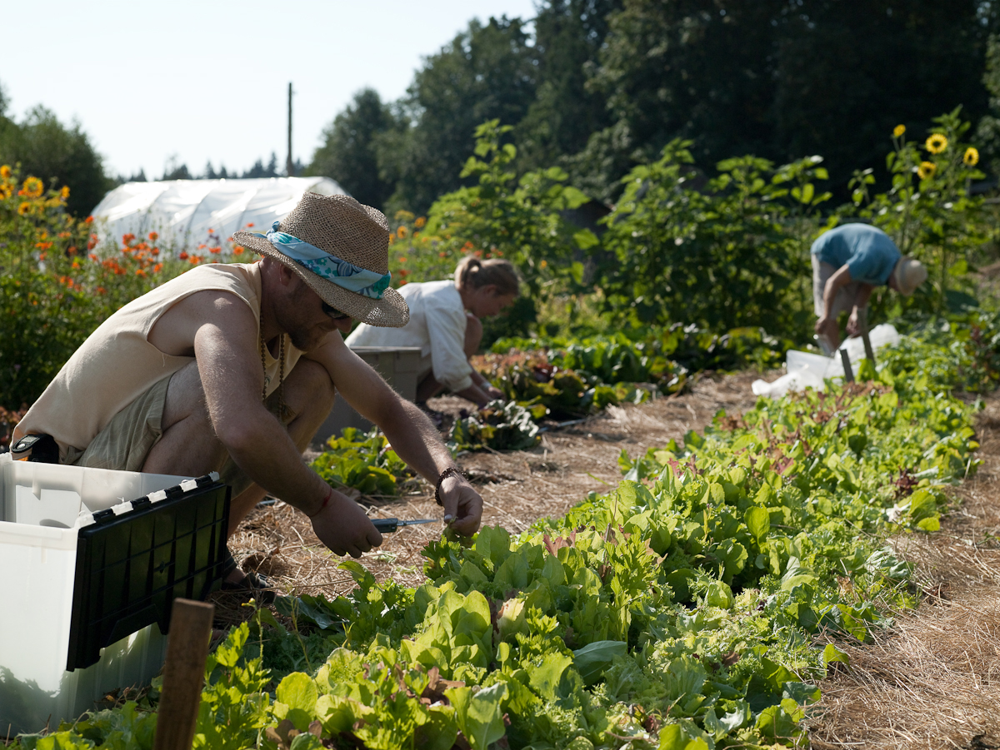

41 years of regenerative farming on sacred land.
The Salt Spring Centre of Yoga is located on 69 acres of protected land zoned Agricultural Land Reserve, which makes up less than 5% of British Columbia's total land base. We have abundant access to farmland and produce fruits and vegetables to support the Centre's kitchen as well as the broader Salt Spring Island population. Our farming efforts vary depending on the year and the resources available to us. We do not use pesticides and never have.
Seasonal crops including salad greens, root vegetables, squash, tomatoes, beans, and herbs from our kitchen garden.
Heritage apple, pear, plum, and cherry trees throughout the property, along with berry bushes.
Culinary and Ayurvedic herbs grown for the kitchen and wellness programs.
Community members are welcome to join us for Farm & Garden volunteer days. Work alongside our farm team, learn about organic methods, and take home fresh produce. Check our calendar for upcoming volunteer dates.
View CalendarEverything grown on the farm feeds directly into the Centre's kitchen, where our team prepares fresh lacto-vegetarian meals for residents, guests, and retreat participants. The farm-to-table journey is central to the Centre's philosophy of mindful, sustainable living.
Join our Karma Yoga program and work the land.
Learn About Karma Yoga"The body is like a garden; the mind is like a gardener."Baba Hari Dass